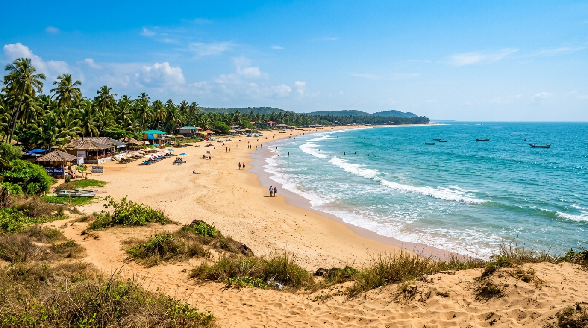
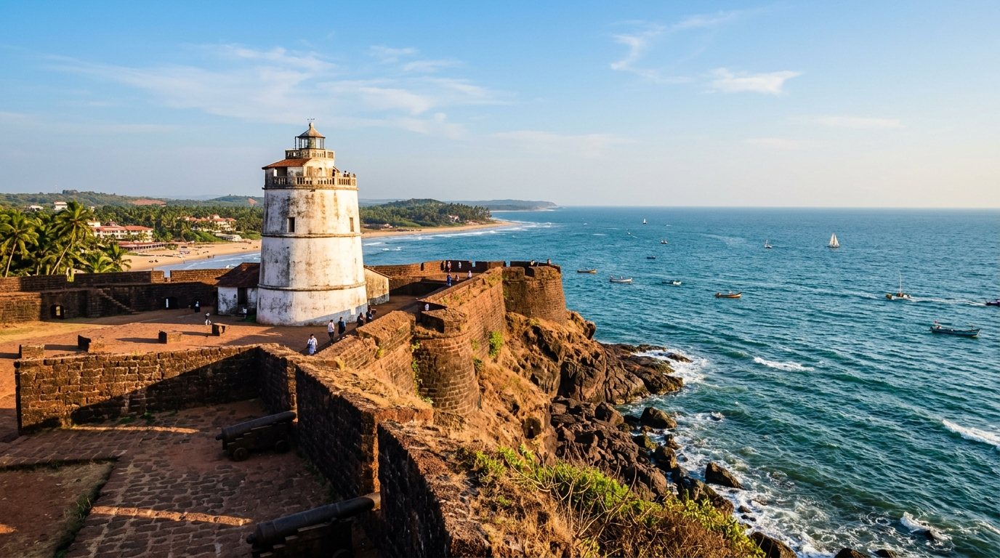
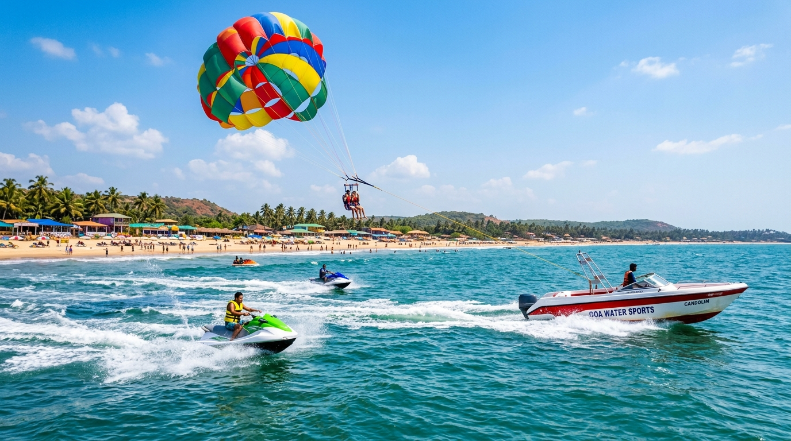
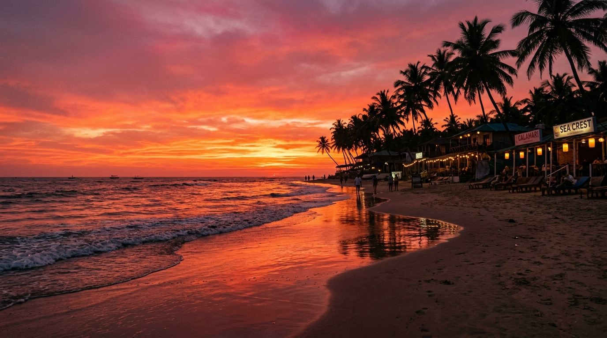

Candolim Beach
North Goa's Serene Golden Sands, Fortified Heritage & Water Sports Hub
Stretching along the azure Arabian Sea in North Goa's Bardez Taluka, Candolim Beach is celebrated for its sweeping golden sand dunes, tranquil coastal ambiance, and rich historic legacy. Framed by the imposing 17th-century Fort Aguada to the south, Candolim offers a refined blend of thrilling water sports, authentic Goan-Portuguese shacks, and scenic seaside relaxation.
📍 Location & Geographical Context
Candolim Beach is situated in Bardez Taluka of North Goa District, approximately 14 kilometers north of Panaji (the state capital of Goa), 38 kilometers north of Dabolim International Airport (GOI), and 20 kilometers south of Manohar International Airport in MOPA (GOX). It forms the anchor of North Goa's famous continuous 30-kilometer coastal stretch that begins at Aguada Headland and extends north through Sinquerim, Candolim, Calangute, and Baga.
| State & District | Goa State, North Goa District (Bardez Taluka) |
|---|---|
| Geographical Coordinates | 15.5176° N, 73.7628° E |
| Sand Texture | Warm golden sand lined with gentle coastal dunes and sea lavender. |
| Coastal Belt | Southern terminus of the Bardez coastal stretch (Sinquerim–Candolim–Calangute–Baga). |
| Proximity / Transport | 14 km from Panaji, 19 km from Thivim Railway Station, 38 km from Dabolim Airport (GOI). |
🏖️ Beach & Coastline Description
- Tranquil & Refined Atmosphere: Unlike its bustling neighbors Calangute and Baga, Candolim offers a more relaxed, upscale shoreline frequented by discerning travelers.
- Coastal Sand Dunes: Soft golden dunes crowned with scrub vegetation and sea lavender, creating a natural ecological barrier along the coast.
- Historic Shipwreck Legacy: Historically famous as the site of the grounded bulk carrier MV River Princess (2000–2012), which influenced local wave dynamics before its complete salvage.
- Goan Culinary Hub: Lined with classic beachfront shacks and boutique restaurants serving fresh Goan fish curry, Kingfish rava fry, and feni cocktails.
🌴 Coastal Landscape & Environment
- Protective Sand Dune Ridges: Natural coastal sand dunes that shelter the inner village from tidal surges and maintain regional coastal ecology.
- Fringing Coconut Groves: Emerald coconut palm trees line the beach access paths and backdrop the golden sand shore.
- Gentle Arabian Swells: Clear tropical ocean waters with moderate surf, ideal for swimming and water sports during non-monsoon months.
- Aguada Headland Vista: Southern horizon dominated by the dramatic red laterite cliffs of Fort Aguada and its historic lighthouse.
🏄 Recreational Activities
- Thrilling Water Sports: Parasailing high above Candolim bay, jet-skiing, banana boat rides, bumper rides, windsurfing, and speedboating.
- Scuba Diving & Snorkeling: Guided diving and dolphin sighting boat trips departing from nearby Sinquerim and Aguada jetties.
- Beach Shack Lounging: Relax on plush beach sunbeds with iced coconut water, fresh seafood, and ambient seaside music.
- Sunset Walks & Wellness: Evening barefoot walks along the golden tide line, yoga sessions, and traditional Ayurvedic massage centers.
🗺️ Nearby Attractions & Points of Interest
- Fort Aguada & Lighthouse (2.5 km South): Built by the Portuguese in 1612, featuring a 4-storey stone lighthouse and panoramic Arabian Sea views.
- Aguada Jail Museum / Freedom Sanctuary (2.5 km South): Restored heritage prison complex dedicated to Goa's freedom struggle.
- Sinquerim Beach & Fort Ramparts (1.5 km South): Picturesque lower fort walls projecting into the ocean, popular for sunset photos.
- Reis Magos Fort (6 km South-East): Restored 16th-century riverfront fortress overlooking the Mandovi estuary.
- Calangute Beach (3 km North): Energetic commercial beach known as the "Queen of Beaches" in Goa.
🚗 Travel & Visitor Information
- Best Season to Visit: November to February offers ideal dry weather (20°C–30°C) with calm seas and active water sports. March to May is warmer, while June to October brings heavy monsoon rains and rough ocean tides (swimming restricted).
- Beach Safety & Lifeguards: Supervised by professional lifeguards with red/yellow safety flags. Swimmers are advised to stay within designated safe zones.
- Getting There: Located 14 km from Panaji via the Mandovi bridge. Readily accessible by prepaid taxis, self-drive rentals, scooters, and KTC state buses.
- Accommodation Options: Houses luxury oceanfront resorts (such as Taj Fort Aguada Resort and Taj Holiday Village), boutique heritage stays, and cozy beachside guesthouses.
Beaches of India Navigation Matrix
Explore premier coastal destinations across India's maritime states and review safety indicators.
Candolim Beach
Vibe: Golden Sand, Fort Aguada, Water Sports
Currently ViewingAnjuna Beach
Vibe: Rocky Coast, Flea Market, Bohemian
Rocky ShorelineBaga Beach
Vibe: Water Sports, Nightlife, Shacks
Supervised SwimmingPalolem Beach
Vibe: Crescent Bay, Kayaking, Palm Canopy
Safe for SwimmingVarkala Beach
Vibe: Red Laterite Cliffs, Mineral Springs, Surfing
Strong CurrentsKovalam Beach
Vibe: Lighthouse Cove, Ayurvedic Wellness
Safe for SwimmingElephant Beach
Vibe: Coral Reefs, Snorkeling, Sea Walking
Supervised Water SportsCandolim Image Gallery & Attribution



